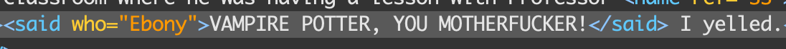
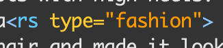

When marking up My Immortal, we kept our eye out for specific things. Whenever we found slang, or a word that was misspelled, we would mark it with the "word" (w) tag. We then specified the proper way of spelling that word by adding the attribute "norm" inside the "word" tag.
We also kept track of the characters within the story. We did this in various different ways. One way was by creating a XML id for each character, so whenever we found the character mentioned in the story, we would tag them with their unique id. In addition, whenever there was dialogue, we would mark who was speaking with the tag "said" and then use the attribute "who" to indicate the speaker . We also created a character list that maps out all the characters mentioned, any nicknames they have in the story, and mispellings of their names.

The author writes detailed descriptions of the clothing characters wear, though the character they do this most often is the protagonist. We marked whenever one of these descriptions happen with the "reference string" tag and the attrbute "fashion" (rs type="fashion" to do this markup
